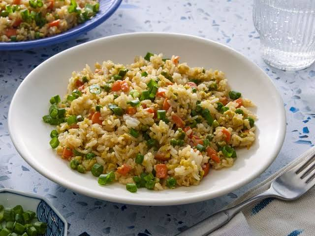

Fried Rice

Description
This fried rice recipe only takes 15 minutes to cook and tastes just like you get at your favorite Chinese
restaurant. Leftover rice, plus a couple of eggs, baby carrots, peas, and soy sauce is all you need. Garnish
with sliced green onions, if desired.
Ingredients
- Baby Carrots
- green Peas
- Vegetable Oil
- Clove garlic
- Large Eggs
- Leftover White Rice
- Soy Sauce
- Sesame Oil
Steps
- Assemble ingredients.
- Place carrots in a small saucepan and cover with water. Bring to a low boil and cook for 3 to 5 minutes.
Stir in peas, then immediately drain in a colander.
- Heat a wok over high heat. Pour in vegetable oil, then stir in carrots, peas, and garlic; cook for about 30
seconds. Add eggs; stir quickly to scramble eggs with vegetables.
- Stir in cooked rice. Add soy sauce and toss rice to coat. Drizzle with sesame oil and toss again.
- Serve hot and enjoy!
Home